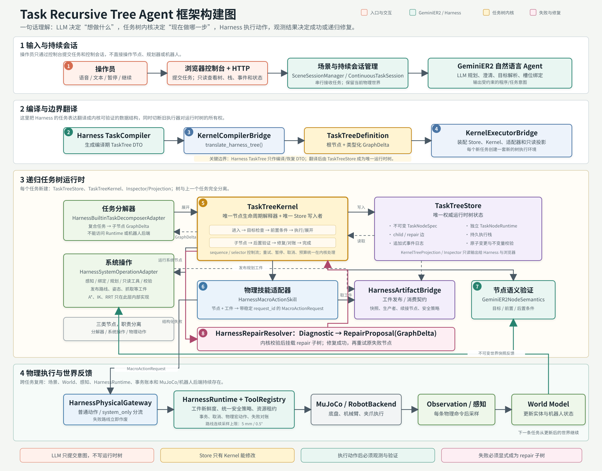

1. 人下达任务
语音、文本、暂停和继续都进入同一个持续会话，控制台只负责交互和观察。
面向非源码读者的中文说明：从一句自然语言任务，走到递归任务树、规划工件、 物理执行、观测验证和自动修复。

语音、文本、暂停和继续都进入同一个持续会话，控制台只负责交互和观察。
GeminiER2 负责自然语言规划、澄清和实体绑定，产出受约束的任务程序。
KernelCompilerBridge 把 Harness 树 DTO 翻译成 TaskTreeDefinition。
新任务获得新的 Store 和 Kernel，但继续使用同一个真实场景、世界状态和物理运行时。
内核统一处理进入、目标检查、前置条件、执行、子节点、验证、重试和修复。
物理技能不能直接控制机器人，只能构造带契约和稳定 ID 的宏动作请求。
每个动作后重新观测世界；成功与否由实时谓词和后置条件决定，不靠动作返回值猜测。
失败先变成结构化 Diagnostic，再生成修复子树并挂到 repair 边，修好后重试原节点。
TaskTreeStore、TaskTreeKernel、
KernelTreeProjection 和当前任务的执行栈。这样不会把不同根目标的节点混在一起。
场景、世界模型、感知、HarnessRuntime、事务记录和 MuJoCo/机器人后端。 因此第二条指令是在第一条指令改变后的世界上继续执行。
放置 Place ├─ 解析并检查对象与目标区域 ├─ 规划抓取 ├─ 提前规划持物运输 ├─ 抓取 Pick │ ├─ 移动到抓取位 │ ├─ 执行抓取 │ └─ 确认已经持有 ├─ 持物移动 TransferHeld │ ├─ 切换运输姿态 │ ├─ 按安全路线移动 │ └─ 确认可以放置 ├─ 释放 Release │ ├─ 执行释放 │ └─ 确认已经松开 └─ 确认物体到达目标区域 路线被挡时： 失败节点 └─ repair：搬走阻挡物 ├─ 递归执行 Place(阻挡物, 停放区) └─ 重新规划受影响路线 完成修复后，再重试原失败节点
| 编译桥 | integrations/gemini_er2/compiler.py |
|---|---|
| 执行装配桥 | integrations/gemini_er2/executor.py |
| 任务树内核 | task/kernel.py |
| 权威树状态 | task/store.py |
| 节点和 GraphDelta | task/model.py |
| GeminiER2 节点适配器 | integrations/gemini_er2/decomposition.py、operations.py、skill.py |
| 工件契约 | integrations/gemini_er2/artifacts.py |
| 物理边界 | integrations/gemini_er2/physical_runtime.py |
| 语义验证与修复 | integrations/gemini_er2/semantics.py、repair.py |
| 持续服务入口 | integrations/gemini_er2/server.py |